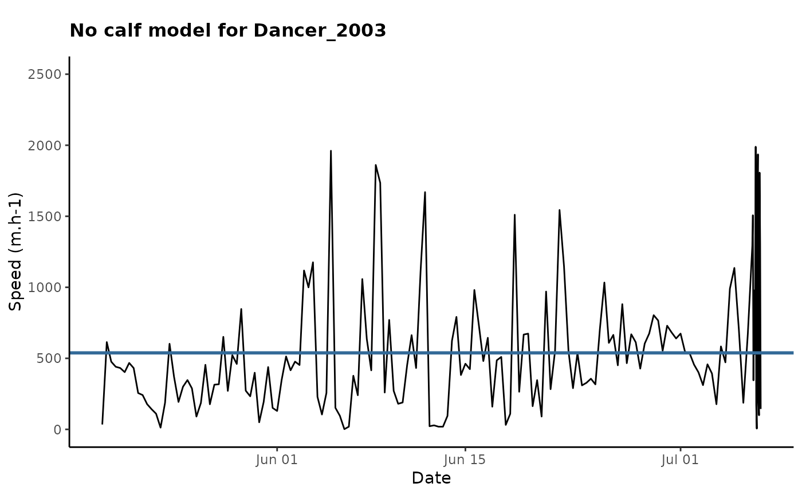
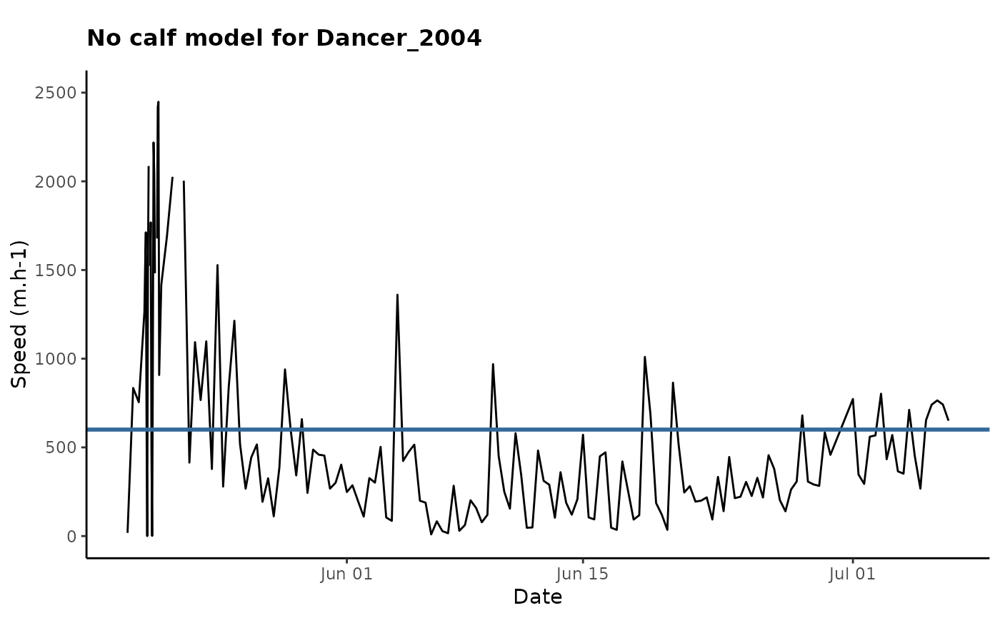
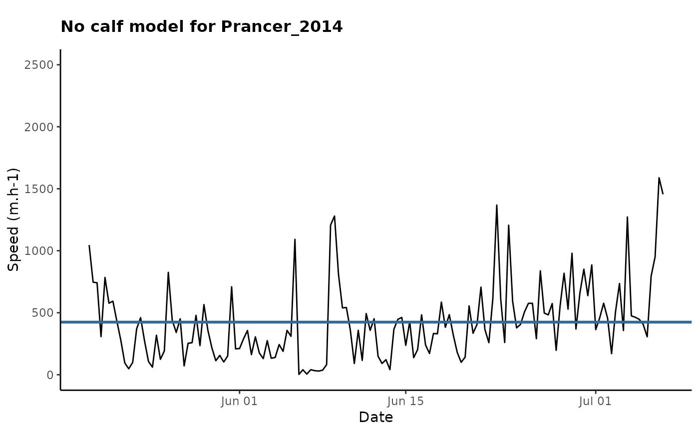
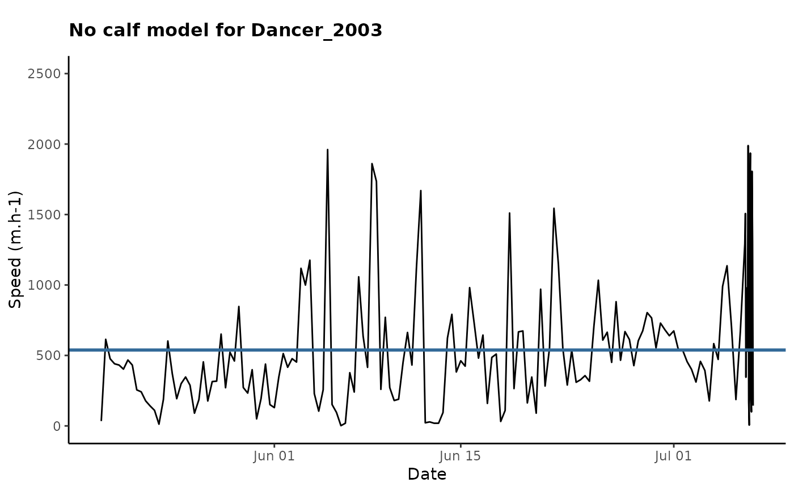
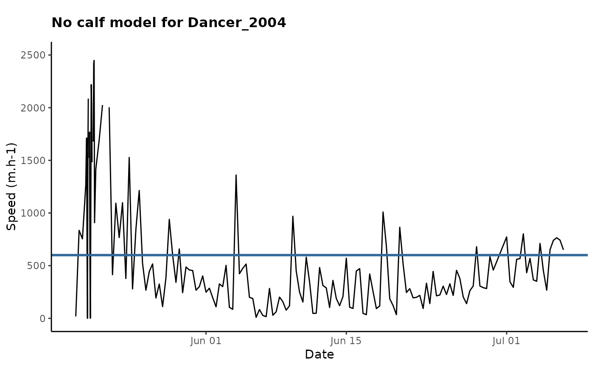
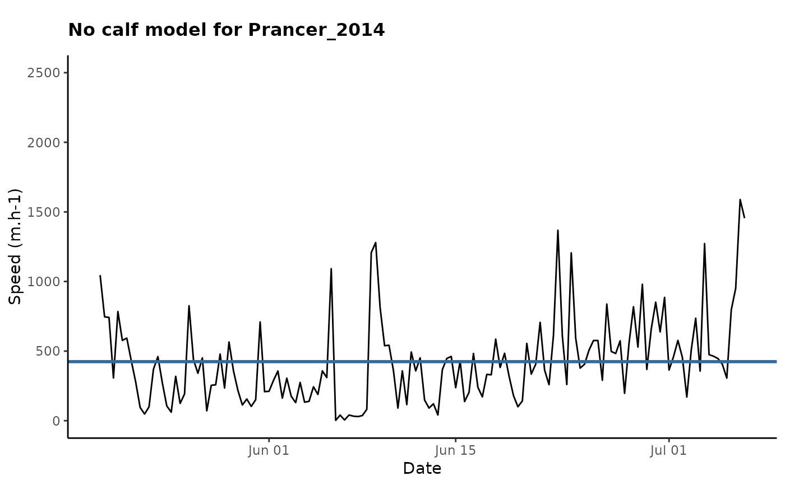
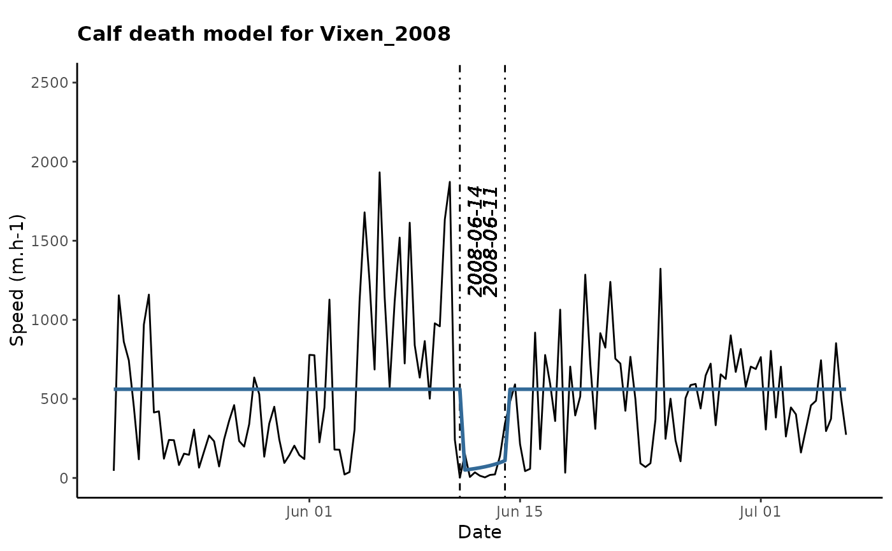
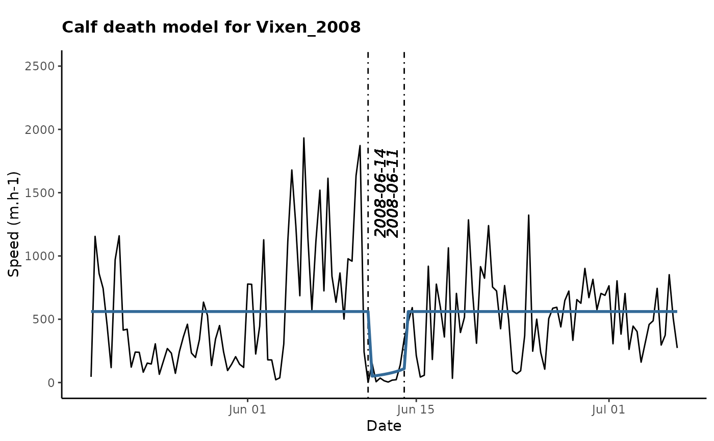

Parturition timing function
estimateCalving.RdFunction that determine calving status of a female (i.e. no calf, with a calf, calf lost) the calving date and the calf death date (if any). This is an adaptation of the individual based method developed by Demars et al. (2013), which has proven good reliability to estimate calving status and calving date for females from the Western Arctic Herd in a previous study (Cameron et al. 2018). However, we adapted this method to be able to infer parturition based on the female movement rate through time.
estimateCalving(
df,
int,
kcons,
models = c("full", "calfonly"),
drawplot = FALSE,
saveplot = FALSE
)Arguments
- df
a dataframe containing the movement rate between subsequent relocation of individuals, as obtained using `getSpeed`. See ?get.speed for more information on the Data requirements
- int
integer value indicating the minimum number of days between the beginning of the time series and the first BP (calf birth), the last BP (calf death) and the end of the time series, and between the two BPs. The main reason for this constraint is that a minimum number of data points are required in each section of the time-series to be able to estimate model parameters. We recommended 9 relocations, thereby 3 days.
- kcons
vector of the minimum and maximum time it takes the female to recover normal speed (in days)
- models
either "full" to fit all three models (i.e., no calf, calf and calf death models), or "calfonly" to fit only the no calf and calf models.
- drawplot
if TRUE, the function will draw a plot of the movement rate in function to the date with the prediction line of the best model selected by AIC
- saveplot
if TRUE, the plot of the best model will be
- dir
the directory used to save the plot (e.g., "C://Users/Documents/")
Value
returns list of 3 dataframes: `statistics` containing the best model for each female, selected based on AIC, the AIC of the 3 models (i.e. no calf model, calf model and calf death model) and the negative likelihood of each model. `Par` containing the estimated parameters of all the models (0: no calf, 1: calf, 2: calf death) `results` containing the best model, for each female, based on AIC, the calving timing and location (if the calf model is the best model), and the mortality timing and location of the calf (if the calf death is the best model).
Details
All models assume speed follows a Gamma distribution and differ in two parameters: shape and scale, which correspond to \(mean(speed)^2 / var(speed)\) and \(var(speed) / mean(speed)\), respectively. The mean speed is thus equal to \(shape * scale\).
For the model representing females that do not calve: the mean speed remains constant through the entire calving period.
For the model representing females that had a calf who survived 4 weeks after birth: the mean speed is constant before calving, then abruptly drops for calving, creating a break point. After calving, the mean speed increases progressively following: \( (shape.calving * (mean(shape) - shape.calving) / k * time) * (scale.calving * (mean(scale) - scale.calving) / k) * time)\) where k is the time, defined in days, required for the calf to achieve adult movement rates.
For the model representing females losing calves: there is an abrupt change in the slope of the post-calving increase, creating a second break point after which the mean speed immediately recovers its pre-calving value.
The models therefore differ in their number of parameters to estimate: the no calf model has two – shape and scale; the calf model has four – shape, scale, k and calving date; and the calf death model has five – shape, scale, k, calving and calf death. We discriminated among models using Akaike’s Information Criterion (AIC) with the best model being the one with the lowest AIC value.
The visualization portion of this code is adapted directly from Matt Cameron and supplementary materials in Cameron et al. 2018.
References
DeMars, C., M. Auger-Méthé, U. Schlägel, S. Boutin, (Published online) Inferring Parturition and Neonate Survival from Movement Patterns of Female Ungulates. Ecology and Evolution. DOI: 10.1002/ece3.785 Cameron, M.D., Joly, K., Breed, G.A., et al. (2018). Movement-based methods to infer parturition events in migratory ungulates. Canadian Journal of Zoology. 96:1187–1195. https://doi.org/10.1139/cjz-2017-0314
Examples
require(TuktuTools)
data(caribou)
# remove potential outliers and keep only females
caribou.cleaned <- removeOutliers(caribou) %>% subset(outlier == "FALSE" & sex == "f")
#> Cleaning Step 1
#> Number of 'outliers' detected: 4
# keep data during calving period (i.e., May 19 to July 7), no more than 3 consecutive days of missing data
# and at least 1 fix per day
caribou.prepped <- prepData(caribou.cleaned, start = "05-19", end = "07-07",
nfixes = 1, dayloss = 3)
#> Period clipped to 05-19 - 07-07
#> Number of excluded individuals-years: 2
# get movement rate for the females
caribou.mr <- getSpeed(caribou.prepped)
head(caribou.mr)
#> ID sex Time Year Lon Lat x y
#> 1 Dancer f 2002-05-19 00:00:00 2002 -130.6295 64.86413 139075.4 7215110
#> 2 Dancer f 2002-05-19 08:00:00 2002 -130.6010 64.91193 141061.6 7220245
#> 3 Dancer f 2002-05-19 16:00:00 2002 -130.5404 65.03517 145551.0 7233559
#> 4 Dancer f 2002-05-20 00:00:00 2002 -130.4893 65.12021 149065.5 7242700
#> 5 Dancer f 2002-05-20 08:00:00 2002 -130.4349 65.17452 152319.3 7248417
#> 6 Dancer f 2002-05-20 16:00:00 2002 -130.3993 65.22834 154681.2 7254187
#> outlier z dt sl dhours speed
#> 1 FALSE 139075+7215110i NA NA 0 NA
#> 2 FALSE 141062+7220245i 8 5505.728 8 688.2160
#> 3 FALSE 145551+7233559i 8 14050.469 16 1756.3086
#> 4 FALSE 149066+7242700i 8 9792.617 24 1224.0772
#> 5 FALSE 152319+7248417i 8 6578.743 32 822.3429
#> 6 FALSE 154681+7254187i 8 6234.093 40 779.2616
# estimate calving with the no calf and calf model
parturitions <- estimateCalving(caribou.mr, int=3, kcons =c(5,21), models = "full", drawplot = TRUE)
#> [1] "Dancer_2002"
 #> [1] "Dancer_2003"

#> [1] "Dancer_2004"

#> [1] "Prancer_2014"

#> [1] "Prancer_2015"
#> [1] "Dancer_2003"

#> [1] "Dancer_2004"

#> [1] "Prancer_2014"

#> [1] "Prancer_2015"
 #> [1] "Prancer_2016"
#> [1] "Prancer_2016"
 #> [1] "Vixen_2007"
#> [1] "Vixen_2007"
 #> [1] "Vixen_2008"

#> [1] "Vixen_2009"
#> [1] "Vixen_2008"

#> [1] "Vixen_2009"
 #> [1] "Comet_2006"
#> [1] "Comet_2006"
 #> [1] "Comet_2007"
#> [1] "Comet_2007"
 head(parturitions)
#> $statistics
#> ID_Year ID Year Best.Model M0.AIC Mcalf.AIC Mcalfdeath.AIC
#> 1 Dancer_2002 Dancer 2002 calf 2127.988 2049.150 2051.989
#> 2 Dancer_2003 Dancer 2003 nocalf 2343.712 2352.656 2352.494
#> 3 Dancer_2004 Dancer 2004 nocalf 2417.476 NA NA
#> 4 Prancer_2014 Prancer 2014 nocalf 2046.705 2063.563 2060.998
#> 5 Prancer_2015 Prancer 2015 calf 1999.761 1986.886 1987.933
#> 6 Prancer_2016 Prancer 2016 calf 1999.598 1989.871 1991.510
#> 7 Vixen_2007 Vixen 2007 calf 2141.104 2083.512 2086.792
#> 8 Vixen_2008 Vixen 2008 calfdeath 2140.372 2113.974 2113.804
#> 9 Vixen_2009 Vixen 2009 calf 2129.976 2092.720 2094.988
#> 10 Comet_2006 Comet 2006 calf 2262.255 2242.464 2243.088
#> 11 Comet_2007 Comet 2007 calfdeath 2068.392 2054.771 2031.548
#> M0.mnll Mcalf.mnll Mcaldeath.mnll
#> 1 -1061.9938 -1019.5752 -1019.9945
#> 2 -1169.8561 -1171.3280 -1170.2468
#> 3 -1206.7378 NA NA
#> 4 -1021.3523 -1026.7816 -1024.4989
#> 5 -997.8806 -988.4432 -987.9665
#> 6 -997.7991 -989.9354 -989.7550
#> 7 -1068.5520 -1036.7559 -1037.3961
#> 8 -1068.1862 -1051.9869 -1050.9019
#> 9 -1062.9879 -1041.3602 -1041.4941
#> 10 -1129.1276 -1116.2321 -1115.5442
#> 11 -1032.1958 -1022.3857 -1009.7738
#>
#> $par
#> ID Year alpha.0 beta.0 alpha.mean1 beta.mean1 alpha.calf1
#> 1 Dancer 2002 1.8157222 0.003385664 4.110104 0.004935978 1
#> 2 Dancer 2003 1.5163935 0.002816200 1.173065 0.002569369 1
#> 3 Dancer 2004 0.8864629 0.001476667 NA NA NA
#> 4 Prancer 2014 1.8134460 0.004275352 2.163503 0.005348627 1
#> 5 Prancer 2015 1.7909516 0.005022935 1.971807 0.005734049 1
#> 6 Prancer 2016 1.4451783 0.003647874 1.381339 0.002648580 1
#> 7 Vixen 2007 1.3421362 0.002334021 2.957727 0.002822821 1
#> 8 Vixen 2008 1.5909909 0.003059685 1.281277 0.002284303 1
#> 9 Vixen 2009 0.7521360 0.001306296 1.191237 0.001197908 1
#> 10 Comet 2006 1.4344893 0.003243705 1.846232 0.004439056 1
#> 11 Comet 2007 1.1338237 0.002390424 1.068144 0.001992606 1
#> beta.calf1 BP.calf1 calving.date1 recovery1 alpha.mean2 beta.mean2
#> 1 0.014659220 13 2002-06-01 00:00:00 504.0000 4.110104 0.004935978
#> 2 0.005138737 389 2003-06-12 00:00:00 120.0000 1.173065 0.002569369
#> 3 NA NA <NA> NA NA NA
#> 4 0.010697254 8 2014-05-27 00:00:00 312.0007 2.163503 0.005348627
#> 5 0.011468098 384 2015-06-07 00:01:00 247.9643 1.971807 0.005734049
#> 6 0.009014247 748 2016-06-05 00:01:00 260.7497 1.381339 0.002648580
#> 7 0.012157285 12 2007-05-31 00:00:00 504.0000 2.957727 0.002822821
#> 8 0.013520722 389 2008-06-11 00:00:00 120.0000 1.281277 0.002284303
#> 9 0.006606989 748 2009-06-05 00:01:00 504.0000 1.191237 0.001197908
#> 10 0.008878112 16 2006-06-04 00:01:00 296.0004 1.846232 0.004439056
#> 11 0.012815665 389 2007-06-12 00:00:00 120.0000 1.068144 0.001992606
#> alpha.calf2 beta.calf2 BP.calf2 calving.date2 BP.calfdeath2
#> 1 1 0.014574431 13 2002-06-01 00:00:00 33
#> 2 1 0.005401832 389 2003-06-12 00:00:00 392
#> 3 NA NA NA <NA> NA
#> 4 1 0.010697254 8 2014-05-27 00:00:00 20
#> 5 1 0.011468098 384 2015-06-07 00:01:00 391
#> 6 1 0.009993710 748 2016-06-05 00:01:00 757
#> 7 1 0.012045722 12 2007-05-31 00:00:00 32
#> 8 1 0.019880896 389 2008-06-11 00:00:00 392
#> 9 1 0.006585084 748 2009-06-05 00:01:00 768
#> 10 1 0.008878112 16 2006-06-04 00:01:00 26
#> 11 1 0.060760574 389 2007-06-12 00:00:00 392
#> calfdeath.date2 recovery2
#> 1 2002-06-21 00:00:00 504.0000
#> 2 2003-06-15 00:00:00 120.0000
#> 3 <NA> NA
#> 4 2014-06-08 00:00:00 475.1712
#> 5 2015-06-14 00:00:00 315.1904
#> 6 2016-06-14 00:00:00 231.0376
#> 7 2007-06-20 00:00:00 504.0000
#> 8 2008-06-14 00:00:00 120.0000
#> 9 2009-06-25 00:00:00 504.0000
#> 10 2006-06-14 00:01:00 408.5460
#> 11 2007-06-15 00:01:00 311.9747
#>
#> $results
#> ID Year Best.Model calving.date mort.date Recovery
#> 1 Dancer 2002 calf 2002-06-01 00:00:00 <NA> 21
#> 2 Dancer 2003 nocalf <NA> <NA> NA
#> 3 Dancer 2004 nocalf <NA> <NA> NA
#> 4 Prancer 2014 nocalf <NA> <NA> NA
#> 5 Prancer 2015 calf 2015-06-07 00:01:00 <NA> 10
#> 6 Prancer 2016 calf 2016-06-05 00:01:00 <NA> 11
#> 7 Vixen 2007 calf 2007-05-31 00:00:00 <NA> 21
#> 8 Vixen 2008 calfdeath 2008-06-11 00:00:00 2008-06-14 00:00:00 NA
#> 9 Vixen 2009 calf 2009-06-05 00:01:00 <NA> 21
#> 10 Comet 2006 calf 2006-06-04 00:01:00 <NA> 12
#> 11 Comet 2007 calfdeath 2007-06-12 00:00:00 2007-06-15 00:01:00 NA
#> calf.loc.x calf.loc.y
#> 1 217352.1 7305597
#> 2 NA NA
#> 3 NA NA
#> 4 NA NA
#> 5 206193.7 7321665
#> 6 230550.3 7320223
#> 7 221893.5 7313969
#> 8 240340.4 7283373
#> 9 209709.3 7320380
#> 10 219053.9 7327185
#> 11 245517.3 7342269
#>
# get plot for one individual
table(caribou.mr$ID, caribou.mr$Year) # take Vixen in 2008
#>
#> 2002 2003 2004 2006 2007 2008 2009 2014 2015 2016
#> Dancer 147 161 163 0 0 0 0 0 0 0
#> Prancer 0 0 0 0 0 0 0 147 147 144
#> Vixen 0 0 0 0 147 147 144 0 0 0
#> Comet 0 0 0 161 144 0 0 0 0 0
# what is the identified model for Vixen in 2008?
parturitions$results[parturitions$results$ID == "Vixen" &
parturitions$results$Year == 2008,] # "calfdeath"
#> ID Year Best.Model calving.date mort.date Recovery calf.loc.x calf.loc.y
#> 8 Vixen 2008 calfdeath 2008-06-11 2008-06-14 NA 240340.4 7283373
plotCalvingRange(df = caribou.mr[caribou.mr$ID == "Vixen" &
caribou.mr$Year == 2008,], int = 3,
kcons = c(5,21), bestmodel = "calfdeath")
#> Error in plotCalvingRange(df = caribou.mr[caribou.mr$ID == "Vixen" & caribou.mr$Year == 2008, ], int = 3, kcons = c(5, 21), bestmodel = "calfdeath"): could not find function "plotCalvingRange"
head(parturitions)
#> $statistics
#> ID_Year ID Year Best.Model M0.AIC Mcalf.AIC Mcalfdeath.AIC
#> 1 Dancer_2002 Dancer 2002 calf 2127.988 2049.150 2051.989
#> 2 Dancer_2003 Dancer 2003 nocalf 2343.712 2352.656 2352.494
#> 3 Dancer_2004 Dancer 2004 nocalf 2417.476 NA NA
#> 4 Prancer_2014 Prancer 2014 nocalf 2046.705 2063.563 2060.998
#> 5 Prancer_2015 Prancer 2015 calf 1999.761 1986.886 1987.933
#> 6 Prancer_2016 Prancer 2016 calf 1999.598 1989.871 1991.510
#> 7 Vixen_2007 Vixen 2007 calf 2141.104 2083.512 2086.792
#> 8 Vixen_2008 Vixen 2008 calfdeath 2140.372 2113.974 2113.804
#> 9 Vixen_2009 Vixen 2009 calf 2129.976 2092.720 2094.988
#> 10 Comet_2006 Comet 2006 calf 2262.255 2242.464 2243.088
#> 11 Comet_2007 Comet 2007 calfdeath 2068.392 2054.771 2031.548
#> M0.mnll Mcalf.mnll Mcaldeath.mnll
#> 1 -1061.9938 -1019.5752 -1019.9945
#> 2 -1169.8561 -1171.3280 -1170.2468
#> 3 -1206.7378 NA NA
#> 4 -1021.3523 -1026.7816 -1024.4989
#> 5 -997.8806 -988.4432 -987.9665
#> 6 -997.7991 -989.9354 -989.7550
#> 7 -1068.5520 -1036.7559 -1037.3961
#> 8 -1068.1862 -1051.9869 -1050.9019
#> 9 -1062.9879 -1041.3602 -1041.4941
#> 10 -1129.1276 -1116.2321 -1115.5442
#> 11 -1032.1958 -1022.3857 -1009.7738
#>
#> $par
#> ID Year alpha.0 beta.0 alpha.mean1 beta.mean1 alpha.calf1
#> 1 Dancer 2002 1.8157222 0.003385664 4.110104 0.004935978 1
#> 2 Dancer 2003 1.5163935 0.002816200 1.173065 0.002569369 1
#> 3 Dancer 2004 0.8864629 0.001476667 NA NA NA
#> 4 Prancer 2014 1.8134460 0.004275352 2.163503 0.005348627 1
#> 5 Prancer 2015 1.7909516 0.005022935 1.971807 0.005734049 1
#> 6 Prancer 2016 1.4451783 0.003647874 1.381339 0.002648580 1
#> 7 Vixen 2007 1.3421362 0.002334021 2.957727 0.002822821 1
#> 8 Vixen 2008 1.5909909 0.003059685 1.281277 0.002284303 1
#> 9 Vixen 2009 0.7521360 0.001306296 1.191237 0.001197908 1
#> 10 Comet 2006 1.4344893 0.003243705 1.846232 0.004439056 1
#> 11 Comet 2007 1.1338237 0.002390424 1.068144 0.001992606 1
#> beta.calf1 BP.calf1 calving.date1 recovery1 alpha.mean2 beta.mean2
#> 1 0.014659220 13 2002-06-01 00:00:00 504.0000 4.110104 0.004935978
#> 2 0.005138737 389 2003-06-12 00:00:00 120.0000 1.173065 0.002569369
#> 3 NA NA <NA> NA NA NA
#> 4 0.010697254 8 2014-05-27 00:00:00 312.0007 2.163503 0.005348627
#> 5 0.011468098 384 2015-06-07 00:01:00 247.9643 1.971807 0.005734049
#> 6 0.009014247 748 2016-06-05 00:01:00 260.7497 1.381339 0.002648580
#> 7 0.012157285 12 2007-05-31 00:00:00 504.0000 2.957727 0.002822821
#> 8 0.013520722 389 2008-06-11 00:00:00 120.0000 1.281277 0.002284303
#> 9 0.006606989 748 2009-06-05 00:01:00 504.0000 1.191237 0.001197908
#> 10 0.008878112 16 2006-06-04 00:01:00 296.0004 1.846232 0.004439056
#> 11 0.012815665 389 2007-06-12 00:00:00 120.0000 1.068144 0.001992606
#> alpha.calf2 beta.calf2 BP.calf2 calving.date2 BP.calfdeath2
#> 1 1 0.014574431 13 2002-06-01 00:00:00 33
#> 2 1 0.005401832 389 2003-06-12 00:00:00 392
#> 3 NA NA NA <NA> NA
#> 4 1 0.010697254 8 2014-05-27 00:00:00 20
#> 5 1 0.011468098 384 2015-06-07 00:01:00 391
#> 6 1 0.009993710 748 2016-06-05 00:01:00 757
#> 7 1 0.012045722 12 2007-05-31 00:00:00 32
#> 8 1 0.019880896 389 2008-06-11 00:00:00 392
#> 9 1 0.006585084 748 2009-06-05 00:01:00 768
#> 10 1 0.008878112 16 2006-06-04 00:01:00 26
#> 11 1 0.060760574 389 2007-06-12 00:00:00 392
#> calfdeath.date2 recovery2
#> 1 2002-06-21 00:00:00 504.0000
#> 2 2003-06-15 00:00:00 120.0000
#> 3 <NA> NA
#> 4 2014-06-08 00:00:00 475.1712
#> 5 2015-06-14 00:00:00 315.1904
#> 6 2016-06-14 00:00:00 231.0376
#> 7 2007-06-20 00:00:00 504.0000
#> 8 2008-06-14 00:00:00 120.0000
#> 9 2009-06-25 00:00:00 504.0000
#> 10 2006-06-14 00:01:00 408.5460
#> 11 2007-06-15 00:01:00 311.9747
#>
#> $results
#> ID Year Best.Model calving.date mort.date Recovery
#> 1 Dancer 2002 calf 2002-06-01 00:00:00 <NA> 21
#> 2 Dancer 2003 nocalf <NA> <NA> NA
#> 3 Dancer 2004 nocalf <NA> <NA> NA
#> 4 Prancer 2014 nocalf <NA> <NA> NA
#> 5 Prancer 2015 calf 2015-06-07 00:01:00 <NA> 10
#> 6 Prancer 2016 calf 2016-06-05 00:01:00 <NA> 11
#> 7 Vixen 2007 calf 2007-05-31 00:00:00 <NA> 21
#> 8 Vixen 2008 calfdeath 2008-06-11 00:00:00 2008-06-14 00:00:00 NA
#> 9 Vixen 2009 calf 2009-06-05 00:01:00 <NA> 21
#> 10 Comet 2006 calf 2006-06-04 00:01:00 <NA> 12
#> 11 Comet 2007 calfdeath 2007-06-12 00:00:00 2007-06-15 00:01:00 NA
#> calf.loc.x calf.loc.y
#> 1 217352.1 7305597
#> 2 NA NA
#> 3 NA NA
#> 4 NA NA
#> 5 206193.7 7321665
#> 6 230550.3 7320223
#> 7 221893.5 7313969
#> 8 240340.4 7283373
#> 9 209709.3 7320380
#> 10 219053.9 7327185
#> 11 245517.3 7342269
#>
# get plot for one individual
table(caribou.mr$ID, caribou.mr$Year) # take Vixen in 2008
#>
#> 2002 2003 2004 2006 2007 2008 2009 2014 2015 2016
#> Dancer 147 161 163 0 0 0 0 0 0 0
#> Prancer 0 0 0 0 0 0 0 147 147 144
#> Vixen 0 0 0 0 147 147 144 0 0 0
#> Comet 0 0 0 161 144 0 0 0 0 0
# what is the identified model for Vixen in 2008?
parturitions$results[parturitions$results$ID == "Vixen" &
parturitions$results$Year == 2008,] # "calfdeath"
#> ID Year Best.Model calving.date mort.date Recovery calf.loc.x calf.loc.y
#> 8 Vixen 2008 calfdeath 2008-06-11 2008-06-14 NA 240340.4 7283373
plotCalvingRange(df = caribou.mr[caribou.mr$ID == "Vixen" &
caribou.mr$Year == 2008,], int = 3,
kcons = c(5,21), bestmodel = "calfdeath")
#> Error in plotCalvingRange(df = caribou.mr[caribou.mr$ID == "Vixen" & caribou.mr$Year == 2008, ], int = 3, kcons = c(5, 21), bestmodel = "calfdeath"): could not find function "plotCalvingRange"